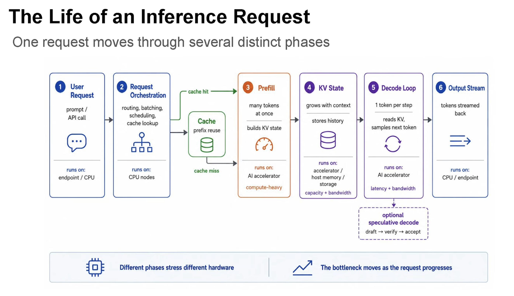
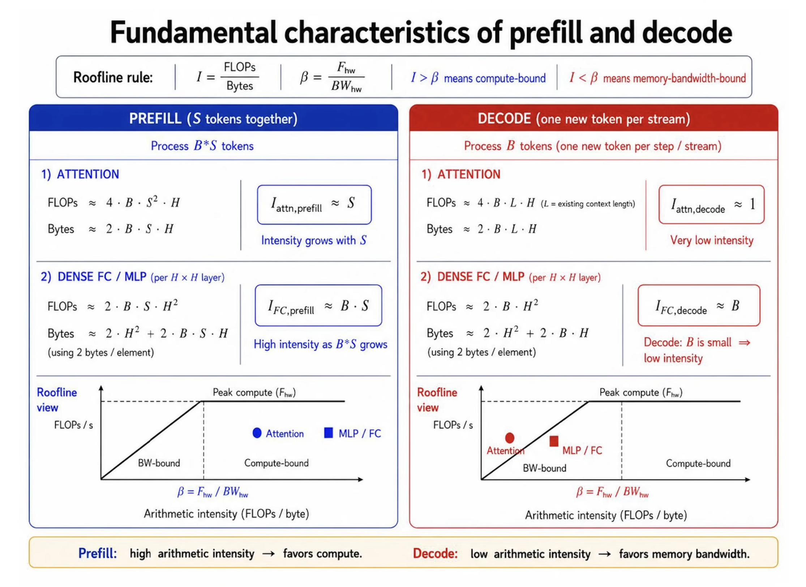
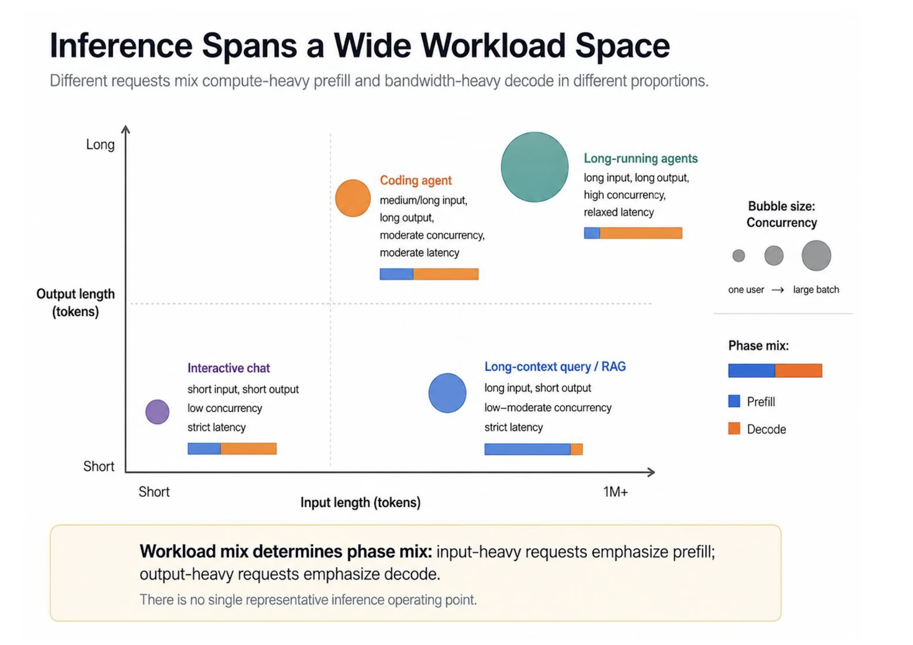
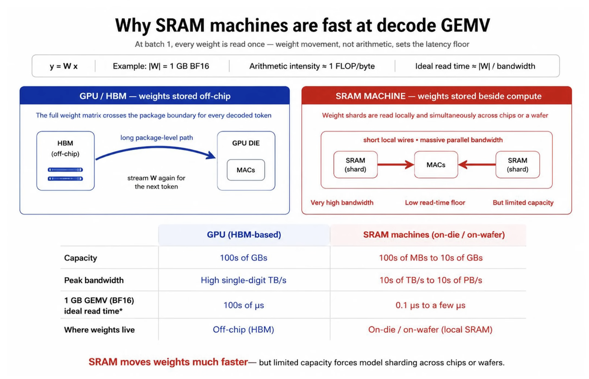

Misha Smelyanskiy begins with an important disclaimer: this talk contains no benchmark data. He makes a first-principles case for workload-optimized heterogeneous infrastructure because inference phases stress compute, networking, storage, and memory bandwidth differently.
There is no single inference bottleneck. It moves as the request moves through orchestration, prefix-cache lookup, prefill, KV-cache handling, autoregressive decode, and speculative decoding.
Split the token loop first
Transformer inference has two visibly different phases. Prefill processes the prompt in parallel and builds the key-value cache; it benefits from high compute throughput. Decode generates one token at a time, repeatedly reading model weights and cache; it is often limited by memory bandwidth and latency. A GPU selected for maximal prefill throughput can be a costly, power-hungry decode engine.
A CPU system orchestrates, schedules, and batches the prompt. The system checks a prefix cache; uncached prompt tokens enter compute-intensive prefill. KV-cache creation may involve CPU or accelerator memory and network transfer. Decode produces one token at a time and is memory intensive and latency sensitive.

The roofline test
Misha uses arithmetic intensity: FLOPs divided by bytes moved. Above a machine’s peak-FLOPs-to-bandwidth ratio, work tends to be compute-bound; below it, memory-bandwidth-bound. Prefill can reuse weights across prompt tokens and is generally compute-bound. Decode advances one token at a time, so attention and even practical-batch MLP work are often bandwidth-bound.

Disaggregation turns hardware into a scheduler problem
Interactive chat, long-context questions, coding agents, and long-running agents occupy different mixes of prefill and decode, concurrency, and latency. That variety is the basis for specialization.
Why an SRAM machine can help decode
An SRAM-oriented accelerator keeps much more of a weight matrix on die, offering high bandwidth and low latency for decode’s matrix-vector work. Its catch is capacity: on-die memory is limited by chip area, so large models must be sharded without losing the benefit.
Three disaggregation examples
- Prefill and decode: system A prefills and system B decodes. B is worthwhile only when its speedup offsets its added power. Short outputs can lose money; longer outputs spend enough time decoding to cross the break-even point.
- Attention and MoE: GPUs excel at high concurrency, but throughput falls as concurrency drops for interactivity. Offloading bandwidth- and latency-sensitive work to a second system can extend the responsive range, even if it is not the cheapest high-throughput configuration.
- Speculative decoding: system B runs the drafter while A runs the verifier. A faster or larger drafter can improve token acceptance and latency, and several verifiers may share it.
The full-stack bill
Heterogeneous systems change data-center power density, cooling, and rack configuration. Every A-to-B transfer makes network topology part of latency. Misha says co-design also needs a well-calibrated simulator to explore many design points.
The previous article introduced retrieval, tool execution, safety checks, local routing, observability, and resilience. Those are plausible topics, but Misha did not discuss them here, so they have been removed.
The takeaway
The argument is conditional: split a workload only when phase-specific gains exceed added power, networking, and system cost. Arithmetic intensity, sequence shape, concurrency, and latency identify candidates; calibrated measurement must eventually prove them.
Begin with the complete request, not the accelerator
Misha’s lifecycle diagram is a useful antidote to a common simplification. An inference request is often summarized as “run the model on a GPU.” In reality, a user or API creates a request, CPU software authenticates and schedules it, caches are consulted, prompt tokens are processed, KV state is stored, new tokens are generated, and output is streamed.
Each phase has a different unit of work. Orchestration handles control flow and queues. Prefix lookup handles metadata and stored state. Prefill performs dense parallel computation across prompt tokens. KV storage consumes capacity and bandwidth. Decode repeats a latency-sensitive loop. Speculative decoding introduces a draft-and-verify pipeline.
Arithmetic intensity step by step
Arithmetic intensity divides useful floating-point operations by bytes transferred from memory. If an operation performs many calculations on each fetched byte, adding compute helps. If it performs little work before needing more data, memory bandwidth sets the limit.
The machine ratio divides peak arithmetic throughput by peak memory bandwidth. The roofline model compares application intensity with this ratio. Below it, attainable FLOPs rise with bandwidth. Above it, the operation approaches the machine’s compute ceiling.
This is a first-order model. Real kernels encounter cache effects, instruction dependencies, launch overhead, synchronization, imperfect vectorization, and network traffic. Yet the model is powerful because it identifies the resource that no amount of unrelated optimization can overcome.
Why prefill has higher intensity
Prefill receives many prompt tokens together. A weight tile loaded from memory can participate in computation for several tokens before it is discarded. In attention, work grows with sequence relationships; in dense layers, batching tokens turns matrix-vector behavior into more efficient matrix-matrix work.
As the product of batch and sequence length grows, the same weights are reused more. Arithmetic intensity rises and the accelerator’s compute units become valuable. Prefill therefore often favors GPUs or accelerators with high matrix throughput.
Why decode falls toward bandwidth
Autoregressive decode produces one new token per active stream at each step. The model weights must be visited again for a small amount of new work. Attention reads the growing KV history. If the active batch is modest because users need low latency, there is not enough reuse to amortize those bytes.
The roofline illustration shows attention intensity near one in a simplified decode case and dense-layer intensity related to batch size. These formulas are approximations, not universal performance predictions. Their purpose is to show why larger batches help and why interactive decode remains difficult.
Context length changes the request over time
The KV cache grows as tokens accumulate. Early decode steps read a short history; later steps read more state. Long conversations therefore increase both memory capacity and bandwidth pressure. The bottleneck moves even within one decode stream.
Cache layout, quantization, paging, and eviction policies can matter as much as raw arithmetic. A system that fits weights comfortably may still fail when many long-context users create enormous KV state.
Different products occupy different points
An interactive chat may have a moderate prompt, a moderate answer, and a strict time-to-first-token target. A document-analysis request may spend most of its time in prefill. A coding agent may alternate long prompts, tool pauses, and long generations. An overnight agent can accept relaxed latency while sustaining high concurrency.
Therefore a benchmark with one input length, output length, and batch cannot select infrastructure for every product. Builders need distributions: percentiles of prompt size, generation size, concurrency, and latency objectives.

SRAM machines in plain language
HBM offers large capacity and high bandwidth, but data still travels from separate memory stacks into compute. SRAM placed on the processor die is much closer and can expose enormous bandwidth with low latency. Keeping weights in SRAM makes repeated matrix-vector operations attractive.
The physical cost is area. SRAM consumes many transistors, so capacity is far smaller than HBM. A large model must span many chips. Once sharded, inter-chip communication becomes part of every layer, and the system must prove that network cost does not consume the SRAM advantage.

Disaggregating prefill and decode
Let system A excel at compute-heavy prefill and system B excel at bandwidth-heavy decode. Requests begin on A, then their KV state becomes available to B. The pools scale independently: more A capacity for long prompts, more B capacity for long outputs.
The split pays only when B’s decode acceleration offsets its added power, capital, and transfer cost. A workload with short outputs barely uses B and may lose total-cost efficiency. A workload with long outputs spends enough time on B to justify it.
This break-even changes with KV transfer bandwidth, queueing, and utilization. If A and B cannot be kept busy simultaneously, specialization creates stranded capacity rather than savings.
Attention and MoE disaggregation
Attention and mixture-of-experts layers do not stress hardware identically. Attention interacts with sequence state and can be bandwidth-sensitive. Expert MLPs can create larger dense computations but also require token routing.
At high concurrency, a GPU batches enough work to deliver excellent throughput. As concurrency falls for interactivity, kernels shrink, overheads become visible, and memory bandwidth is used inefficiently. A second system optimized for low-batch bandwidth can extend the latency range that the service supports.
Misha does not claim this always minimizes cost. He explicitly frames a region where interactivity matters more than the best high-concurrency TCO. Product requirements determine whether that trade is rational.
Speculative decoding across systems
A draft model proposes several future tokens. The main model verifies them together and accepts a prefix. Speed depends on how quickly the drafter proposes and how often the verifier accepts.
If system B can run a stronger drafter at low latency, acceptance may rise. System A remains the authoritative verifier. Several verifier instances may share draft capacity, improving utilization. But network latency between draft and verify steps can destroy the gain, so topology is part of the algorithm.
Networking is not a footnote
Every heterogeneous boundary creates a transfer. Prefill-to-decode moves KV state. Attention-to-expert partitioning moves activations. Speculative systems exchange draft tokens and verification results. The data path must be included in the critical path.
Placement matters: devices in one server, rack, or data hall experience different latency and bandwidth. Network protocols, serialization, congestion, and failure recovery add costs absent from an isolated accelerator benchmark.
Data-center consequences
Different systems may require different power density and cooling. A rack designed for GPUs may not suit a wafer-scale or SRAM-heavy system. Operators need spare capacity, firmware management, monitoring, and replacement plans for each platform.
Heterogeneity can improve workload fit while increasing operational complexity. The system must earn that complexity with measurable end-to-end gains.
Why Misha asks for a simulator
The design space contains hardware speeds, memory capacities, network topologies, arrival patterns, prompt and output distributions, and scheduling policies. Building every combination is impossible. A calibrated simulator can reject poor designs and estimate break-even regions.
Calibration is crucial. A simulator that ignores launch overhead or queueing may confidently recommend the wrong architecture. Measurements from real components must continually correct the model.
An end-to-end evaluation plan
- Collect real request distributions rather than average lengths.
- Measure prefill and decode separately across concurrency.
- Track KV size and transfer time.
- Include idle and peak power for every pool.
- Model queues, failures, and fallback paths.
- Compare time to first token, inter-token latency, throughput, and TCO.
- Validate the simulator against a smaller real deployment.
Common interpretation mistakes
“Prefill is compute-bound” does not mean every prefill kernel reaches peak compute. Short prompts and small batches can remain inefficient. “Decode is bandwidth-bound” does not mean compute never matters. Quantization, attention variants, and very large batches move points on the roofline.
Likewise, “heterogeneous” does not mean assigning every function to a different chip. Each boundary has a cost. The best design may use one platform for several phases and specialize only the dominant bottleneck.
A builder’s decision table
| Observed problem | Likely investigation | Possible specialization |
|---|---|---|
| long TTFT on large prompts | prefill compute and queueing | compute-heavy prefill pool |
| slow token cadence at low batch | weight and KV bandwidth | bandwidth-oriented decode |
| KV capacity exhaustion | context distribution and paging | memory tier or cache redesign |
| poor speculative acceptance | draft quality and latency | stronger dedicated drafter |
| gain lost after splitting | network and stranded capacity | co-location or fewer boundaries |
The precise conclusion
Misha presents hypotheses from first principles, not completed benchmark proof. The roofline model explains why phases may prefer different machines. The three examples show where separation could help. The data-center and simulation discussion explains what must be solved before claiming a production win.
The responsible takeaway is conditional: identify the phase, model its arithmetic and data movement, price every boundary, and validate end to end. Heterogeneity is a tool for matching physics to workload—not a goal by itself.